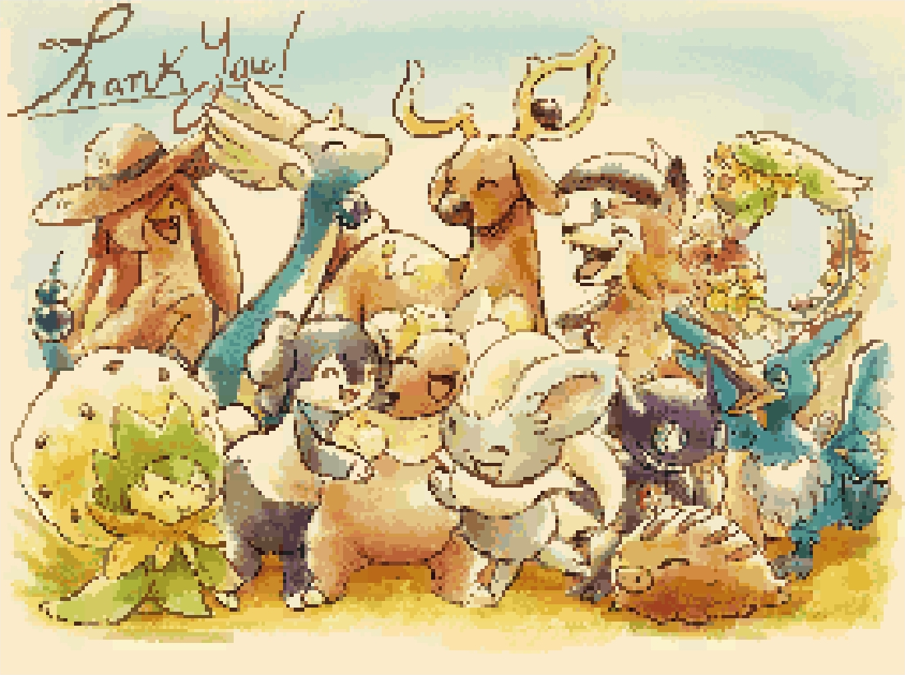

The ranks of these games are graded with a quickly whipped up program. You may find the program here. See more at the bottom of the page.
Reviews are nitpicky and occasionally a bit harsh by nature, please do not take offense if one of these are your favorites!
Currently Playing: Waves of Nostalgia V4
Difficulty: Fairly Easy
Time: 2 Hours (Officially 4-5 Hours)
Dungeon Length: Average 10F | Max 13F
Link: Google Drive
Created: May 19, 2026Originally scored an 88, was bumped up a few points ignoring technical issues.
Turns out, I played version 1.0! This review will be updated at a later time for version 4.0.
The gimmick for this Jam was the use of the top screen, which.. it excelled at. It was essentially a Visual Novel with amazingly drawn portraits with plenty of emotions. It was a bit rough with transitions and changing emotions, but that could be overlooked for something that looked so clean otherwise!
The custom music wasn't overbearing, nor out of place. I felt like it matched the PMD style quite well, and didn't suffer from issues like clicking, stuttering, or static as I've seen with other hacks. The music does fade out when saving, which makes sense.. gotta save on cpu cycles on a device that can hardly play an mp3!
Onto the main premise... You go around town, completing quests and collecting flowers once you get to the end. These are shown in the spot where your rank would be. It is a shame that some of the flowers actually didn't show in the inventory, but I can ignore this as it was for a jam.
The dungeons aren't very hard. I did KO from one, but that was because I wasn't paying attention. I needed to use an item or move and that was that. Apparently, leveling between the MC and partner are synchronized, however, the mayor awards you with an item that increases your level by 5, so I never got to see that.
After completing the final dungeon, you return with the picked flower and find that the statue Dragonair was sculping.. was a tombstone. You lay a bouquet of collected flowers in front of the grave. Each character says their thanks to Flaaffy, and disappears. This scene did make me tear up a bit. All of them say goodbye as Flaaffy's mother hugs them, before she disappears too, leaving her on the ground.
I didn't expect that ending, I didn't expect the ones who died in the flooding, was everyone. Flaaffy's immense regret and sadness going through the ruins, how everything was destroyed, it showed tons of damage, but I thought only some were lost, not everyone who was dear to Flaaffy. The festival was to celebrate the ones who were lost in the flooding, and that's what it did.
I do wonder though... were they just creations of Flaaffy's mind? Or were they truly there for one last moment in spirit? Her partner is psychic, so either one actually works out.
Regardless, this was a very well done hack, even with the constraints of a jam. I would recommend playing through it or watching a playthrough. And.. I do wish there was more, but perhaps, it is better to leave this story resolved.

Difficulty: Expect 1 KO | Fairly RNG
Time: 30 - 45 Minutes | No Saves
Dungeon Length: 10F
Created: May 19, 2026Note: ...okay, you cannot rate this with the standard program. It returned a B- | 77 for the score, but I felt it deserved higher, so it was bumped up to a 85 for the A threshold.
The experience was very dependent on crude humor. Def a different experience from these other hacks. Didn't try to go for emotional and sad, nor a deep story, just under an hour of laughs.
The hack starts with a disclaimer that the maker doesn't live in Canada, and that any offense to Canadians is 100% intentional. So you know you are in for a great time.
Imma be honest, I played this at 2 am with some friends in VC and.. it was hecking hilarious, and probably would still be if we weren't half asleep :3
This is truly, one of the rom hacks of all time. Very humorous with a dash of metagaming.
Difficulty: Fairly Easy
Time: 45 - 75 Minutes | No Saves
Dungeon Length: 5F & 10F
Link: SkyTemple
Created: May 18, 2026It first starts out with a disclaimer, however, it is mostly just for the usage of swear words. I don't consider these to influence the score, they can be used to convey emotion, but aren't required as seen with many other hacks.
Most of the hack takes place in a flashback, which honestly, I forgot that was the case. Since that was the premise of the jam, alright. It does add a layer of suspense.
I do like how it shows dungeon-ing without the Guild's insurance is actually quite dangerous. The badges pretty much are your emergency exit, and when you aren't an official Explorer, you pretty much just die if you are alone in a dungeon. I've always thought that was the case, but its nice to see it reflected in the lore. I never KOed, so I never got to see the dialog.
Some of the NPCs when you go into town were quite humorous, albeit a bit out of place. I don't even know what else to say, but it was amusing.
A lot of things were custom, overworld, using sprites from Pokémon Mystery Universe, which was clever. Music was imported from other games, for better or for worse. One of the tracks was from mainline Pokémon game: they have a different style and I felt it immediately. Nothing else to say about that, it was just odd. The DS also doesn't fare too well with imported music so I can forgive the clicks heard in the custom music. Although, I have seen other hacks not have this issue, so perhaps its just a way of finessing.
There were no save points throughout the entire game, which, I suppose for a max runtime of 75 minutes isn't bad. But maybe someone would like to take a break or just have some security that they won't have to play the whole game again if their DS dies or the flash cart is nudged.
Overall, it was a good, one-shot, emotional story. I would actually not mind more. Or perhaps knowing what happened to the third person who they vaguely mention. The MC's mother figure says they don't want the MC to end up like "...", but they never elaborate on that. It would be cool to have more backstory.
Difficulty: Expect to KO multiple times.
Time: 1 - 2 Hours
Dungeon Length: The Whole Game is One (24 Floors).
Link: SkyTemple
Created: Mar. 13, 2026Being awarded "best gameplay", I had high hopes...
You get these pickaxes you can throw to tunnel through, honestly, pretty cool idea! The main issue is that you have no moves, which is fine... just one to find the stairs. The issue is... PMD, there is no way to run away from an enemy, once you are in combat, you are there, and if another one comes in, you are actually cooked, no escape.
There are a ton of IQ raising items like Wonder Gummis, Orange Gummies, and Nectar that spawn, which do help get through the dungeon, which I think is the main goal. To wipe out of the dungeon like 200 times in order to get the IQ skills by the end of it.
Even so, it was still quite a challenge, which is fine... but it did feel kinda unfair, especially since there are no checkpoints in the entire 24 floor dungeon.
Once you get to the end, you have to go back down after getting the treasure with a 300 turn time limit. It wasn't a challenge at that point.. just an annoyance, since every step you took on a new floor would play the "Something is coming..." line, causing the music to stop and repeat from the beginning... which isn't good for polish.
Furthermore, there's a lot of small things like the mission objective menu showing an incorrect message or just "Dummy", which is fine.. those are just bonus points in my book..
There are three endings, but it doesn't even feel like it. The endings are if you make it out alive without taking the will, if you make it out alive taking the will with you, and if you die. No special "Greed caused your death" or whatever dialog.
All in all, the pickaxe gimmick is cool.. but the implementation was bad. I wish you at least got Agility so you can run away. Nerf my attack, that's fine, just give means of escape... oh and also, you aren't guaranteed a pickaxe if you KO.
Difficulty: Puzzles, But On Par w/ the Original
Time: 3-4 hours
Dungeon Length: 30-60 Minutes
Link: SkyTemple
Created: Mar. 10, 2026The ROM starts off with a cutscene, of who I presume is the MC, writing a diary entry. I have never seen this before! This is super unique, having dialogue the moment the game starts, rather than pressing New Game. We are in for a new mechanical treat.
You do not play a normal dungeon crawler, but the dungeons are these remember places where you go and kidnap save people from these places.
The dungeons are very puzzle oriented and aren't combat heavy.
Right off the bat, the first time skip? Your play time is set to 101 hours and your level goes up by a lot. Finally, a timeskip that increases stats/level... the playtime is a neat thing though!
Fully custom borders and backgrounds, I wonder how they did the cutscenes, since they are just.. super cool!
Heck, even the help documentation is changed to reflect the lore... its really dope!
Music is stock, but has effects that change based on what's going on in the cutscene. Furthermore, character portraits also change mid text box, something I didn't even know was possible..
Holy heck, I don't even know how to describe any of this experience... just go try it yourself... it's leagues better than anything else I have seen, but I suppose that is expected for a game jam winner. They replaced the hecking ejected cart error message too??? I didn't realize that was even possible!
Difficulty: Pretty Easy
Time: 2 Hours to Beat
Dungeon Length: Around 10F | Max: 15F
Link: SkyTemple
Edited: Mar. 9, 2026; Created: Dec. 1, 2025I decided to replay this hack, because I felt like my previous review was a bit harsh. This one is more in-depth because I decided to comment on each chapter after I played through it. I will do this going forward.
Starting off, I chose to name myself "Scorbunny", since I personally the story fits better this way. This review and its grade will be treated as a 3rd person story.
I love the humor, I pretty much giggled at most of the jokes.
It's interesting how it takes place in the far, far future after PMD Sky, but like the new Pokémon who appear in place of the others.
Your level is locked at 20, which is plenty enough for the dungeons in this game. However, this level seems.. weird. If you are the savior of the future from the original game, why are you LV20, rather than high 30s, low 40s? Seems a bit inconsistent, but I digress.
You and Rockruff do missions behind a transition card, which is fine, its a short story and prevents filler for that. However, I wish your level increased by a few levels through that transition, just for story/gameplay consistency. Also, how as Rockruff's rash behavior not caused a problem throughout those, but just now when the user is playing? Perhaps it is mentioned, but I may be wrong.
One thing that made this a better 3rd person story than an insertion story was the fact the MC says they wanna return to the human world badly. Honestly, if I was here in this world of PMD, I'd want to stay here the rest of my life. The MC 100% misses people from back home, and I would too. It is implied in the dialogue, but dang.. I duno if I would go back to the human world regardless.. this just seems more fun.
The dreams being your previous partner, is nice foreshadowing. It's hard to say too much, since this is my second time.
The battles during the Daylight Festival use internal names like TTBoss1-3. I don't know how hard scripting or whatever is, but... I've never seen this before. I don't think any other boss fight in this hack even has that issue though.. strange..
Ch. 8: The scene where the MC loses hope and isn't motivated to do anything is a bit.. cheesy. They turn around so quickly though tbh, they are hopeless then Rockruff goes "ruff ruff, imma snuggle you so you feel better", and then MC is now.. completely fine after not putting their heart into anything the past few days? I duno, just feels like most of it would happen for me, but rather than it be like "wao, i am full of hope now", it would just be a quiet "thanks", and then a slower recovery or so. Granted, I'm not really one to lose hope that quickly, but I also don't really insert well with Scorbunny to begin with. Also, I feel like a transition card would be better, since it actually just seemed like Rockruff went back to his bed during the night.. rather than an entire day passing. They could've also been in Treasure Town to have this conversation about their day...
Chapter 10: For the boss fight... why is the location text "Dream Boss"? That seems.. not right for world building. I duno, just a simple "???" could've done just fine.
Back to the whole intermission, when they say "We need to train up!" and a title card shows.. I do expect a higher level and boost in stats, just to be consistent.
Other than my nitpicking.. it's honestly pretty good writing. Pacing or transitions could've been better, but tbh, this is kind of attempting to fit a story about development and such within 2 hours. It feels.. like it was made for a game jam.
The two new songs are nice remixes and they play during the Final Chapter. The 2nd one is a bit crackily, which made it a bit hard to enjoy, but the final boss theme's audio was fine.
I personally think it's a pretty neat take on the Wishing Star and Dynamaxing. Cool to see some elements of Super Mystery Dungeon in here as well.
A lot of internal names, or just.. weird names used for the Boss areas, and just for some too! Some actually have proper locations, and others have "[Location] Boss", boss shouldn't be in the name.
Also the end scene, I've got the idea that it's Sobble on the left and Rockruff on the right, in the MC's POV, but I wonder if there is a reference here. It felt a bit outta place, but it's creative.. I think.
All in all, it was a pretty alright story hack, the gameplay was quite easy, I only used one Oran Berry during the teacup fight. Otherwise, Scorbunny's moves are so good, that the game is quite easy.
Also, either I'm going crazy, or some of the chapter cards were missing...
Like the OP says, the player stays at Level 20 and there are no overworld segments, it's easy, back-to-back dungeon-ing with story in between. It's a full story-only hack which aren't the worst in my opinion: I do like myself a good story hack!
The MC talks in this hack, which wouldn't be a problem if it wasn't an insertion story, (the game asks for your name and a name to give your partner). This honestly is the only issue I have with this hack. The main reason that the MC in the base game doesn't speak often and somewhat generically, for lack of a better word, is because the MC needs to fit a wide range of people. When the MC says things that I, personally, wouldn't have said in that situation, it breaks the immersion a bit.
Despite this, that doesn't mean the story or writing is bad, far from it. I feel like it captures the feeling of the original game. It flows nicely and doesn't drag on. I was not bored while I was playing, (granted, it wasn't a long hack, but still).
Don't let my opinion discourage you! There's a reason I didn't go too into detail! Honestly, I was tempted to replay the hack after seeing all the positive feedback on it, (it has been a few months since I played through it). I personally would replay with generic species names to get that 3rd person experience I feel this game needs, however, if you want to play it as an insertion story, go for it!
Difficulty: On Par w/ the Original
Time: 27 Hours and Counting...
Link: SkyTemple
Edited: Feb. 18, 2026 | Created: Jan. 31, 2026Starting off, the gameplay/story balance is very similar to the base game and I personally would say the difficulty is about the same, if not a smidge harder. This a third person story and not an insertion story, which I feel allows the character's backgrounds to be deeper.
Things I like and noticed from this hack:
(Blacked out parts are spoilers! Hover over them to view!)
Overall, the story writing is hecking amazing and really keeps me wanting more! It really does capture the charm of the original game, while being its own great and unique story!
Fanart is reposted on their bluesky profile, so if you have played up to the point I have, then do check it out! Some of them are included in the zip file you download, but there are some new ones that are worth checking out! Be warned, the fan art will spoil the game if you haven't completed it.
This hack is still a work in progress, with the last update being Februrary 2026, which is actually a bit of an issue now! The final part in the game has you frozen in time, being in some sort of rendition of the dark future. You cannot earn experience here, therefore, if you are underleveled, its a bit of an issue! This is the only place in the game where you don't earn experience, apart from Shinx's nightmares in early game.
Note: If you read the other reviews and wonder: "why is this one so short?", it's because this was my first review. I didn't know how to really review (and still really don't), but when I replay this, it will have a paragraph per chapter, like the rest.
TBD | Still Playing or Going to Replay | Any
EX+ | Unmatched | 100
EX | Masterpiece | 98
SS | Wish There Was More | 95
S | Marathon Worthy | 92
A | Impressive | 85
B | Solid Play | 75
C | Par for the Course | 60
D | Disappointing | 50
E | Quite Annoying | 30
F | Actually Unplayable | 0
The plus (+) or minus(-) at the end of the grade is determined by the "bonus score", things that aren't essential, but are nice.
An asterisk (*) means an ajusted score. My program either didn't return something I felt accurate, or wasn't capable.